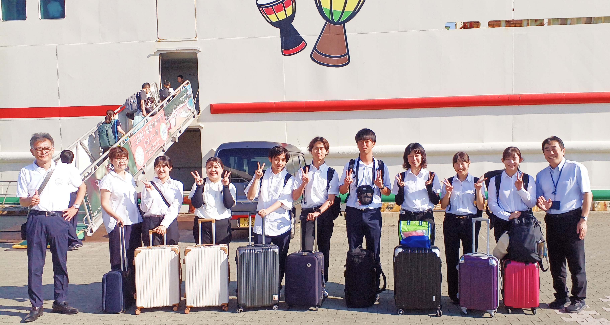

未来の社会に欠かせない学校の教員 プロフェッショナルを養成します
未来の社会の人材を育てる学校。学校の教師は、教育の柱となる役割を担い、これからの社会に欠かせない存在です。
鹿児島国際大学では、教師になることを目指すあなたの夢をサポートします。本学では多彩な教員免許状が取得できます。
教職課程を修了し教員免許状を取得した多くの卒業生が、学校現場で活躍しています。
| 経済学科 | 中学校教諭一種免許状（社会） 高等学校教諭一種免許状（地理歴史 公民 商業） |
| 経営学科 | 中学校社会教諭一種免許状（社会） 高等学校教諭一種免許状（地理歴史 公民 商業 情報） |
| 社会福祉学科 | 中学校社会教諭一種免許状（社会） 高等学校教諭一種免許状（公民 福祉） 特別支援学校教諭一種免許状（知的障害者） |
| 児童学科 | 幼稚園教諭一種免許状、小学校教諭一種免許状 |
| 国際文化学科 | 中学校教諭一種免許状（国語 英語）高等学校教諭一種免許状（国語 英語） |
| 大学院 | 経済学研究科：中学校教諭専修免許状（社会）・高等学校教諭専修免許状（公民 商業） 福祉社会学研究科：高等学校教諭専修免許状（福祉） 国際文化研究科：中学校教諭専修免許状（国語 英語）・高等学校教諭専修免許状（国語 英語） |
教職課程のスケジュール
| 学年 | 時期 | 内容 | ||
|---|---|---|---|---|
| 1年 ・ 2年 |
12月 | 教育課程履修希望者説明会 | 教職課程履修の意思を確かめる | |
| 3月 | 教育課程履修資格者発表 2年生開始：1年次に37単位以上修得し,GPA2.5以上の学生。 3年生開始：2年次に78単位以上修得し,GPA2.5以上の学生。 |
教職の基礎を学ぶ ↓ より専門的実践的な学びの深まり |
||
| （オリエンテーション期間） | 教職課程履修者説明会 教職課程履修登録 履修カルテ説明会 |
|||
| （新3年） | 3月 （オリエンテーション期間） |
教職課程履修者説明会 教育実習先希望調査 介護等体験説明会（第１回） ※中学校教員免許取得希望者 |
自分をみがく | |
| 3年 | 4月～ | 介護等体験説明会（第２回） | ||
| 5月 | 学校参観（同一学園設置校） | |||
| 6月 | 介護等体験説明会（第３～４回） ※オリエンテーション |
|||
| 7月 | 内諾訪問説明会 | |||
| 8月～9月 | 介護等体験（社会福祉施設等５日間） | |||
| 9月 （オリエンテーション期間） |
教育実習報告会 | |||
| 9月～（12月） | 履修カルテ提出（1回目） 介護等体験（特別支援学校２日間） |
|||
| 3月 （オリエンテーション期間） |
教育実習履修資格合格者発表 教職課程履修者説明会 |
|||
| 4年 | 4月 | 履修カルテ提出（２回目） 教育実習履修説明会 |
現場で学ぶ 理論と実践の往還 |
|
| 5月～ | 教育実習実施 〔中学校３週間・高校２週間〕 | 適正と教職への意思を確かめる | ||
| 9月 | 特別支援教育実習実施 ２週間 | |||
| （オリエンテーション期間） | >教育実習報告会 履修カルテ提出（３回目） |
|||
| 10月～ | 教員免許状申請説明会 | |||
| 12月～ | 履修カルテ提出（最終） | |||
| 3月卒業式 | 教員免許状授与 | |||
教職課程のスケジュール
| 学年 | 時期 | 内容 | ||
| 1年 | 7月 | 教職課程履修説明会（免許・資格説明会） | 教職の基礎を学ぶ ↓ より専門的な学びの深まり |
教職課程履修の意思を確かめる |
| 3月 （オリエンテーション期間） |
教職課程履修登録 コース登録 履修カルテ説明会（履修カルテ作成開始） 教育実習先希望調査 |
|||
| 2年 | 4月～ | 基礎実習 | ||
| 3月 （オリエンテーション期間） |
介護等体験説明会（第１回） ※小学校教員免許取得希望者（保育士課程履修者除く） |
|||
| 3年 | 4月～ | 介護等体験説明会（第２回） 内諾訪問説明会 |
自分をみがく | |
| 6月 | 介護等体験説明会（第３～４回）※オリエンテーション | |||
| 7月 | 教育実習報告会 | |||
| 8月～9月 （夏季休業期間） |
介護等体験（社会福祉施設等５日間） | |||
| 9月～（12月） | 履修カルテ提出（1回目） 介護等体験（特別支援学校２日間） |
|||
| 3月 （オリエンテーション期間） |
教育実習履修資格合格者発表 | |||
| 4年 | 4月 | 履修カルテ提出（２回目） 教育実習履修説明会 |
理論と実践の往還 | |
| 5月～ | 教育実習（小学校・幼稚園）実施 ３週間 | 適正と教職の意思を確かめる | ||
| 7月 | 教育実習報告会 | |||
| 9月 | 履修カルテ提出（３回目） | |||
| 10月～ | 教員免許状申請説明会 | |||
| 12月～ | 履修カルテ提出（最終） | |||
| 3月卒業式 | 教員免許状授与 |
教職課程 独自の取り組み

鹿児島県総合教育センターと連携して講義を開講しています。講師の先生から教育現場の話を聞くことで、最新の教育の方法や成果、教育現場の課題について情報を得ることができます。